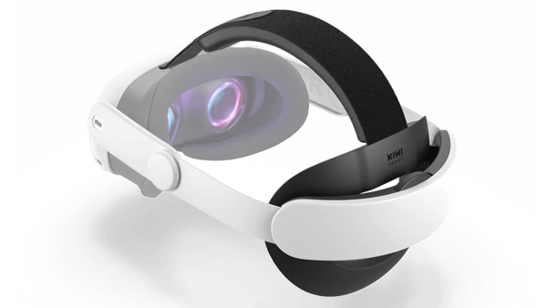
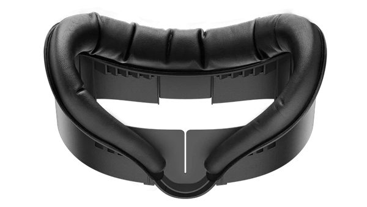

FAQs
Can I host this game at my venue or event?
If you are hosting a non-public event for friends and family, you are welcome to use the Personal Edition available on the Meta Quest Store and Steam, but you may not currently use this version for commercial use.
We are working on a way to handle commercial licensing in future updates to the game. Contact info@toastidwaffel.com for commercial use inquiries prior to said update.
We are working on a way to handle commercial licensing in future updates to the game. Contact info@toastidwaffel.com for commercial use inquiries prior to said update.
What accessories do you recommend?
Headstrap
We recommend upgrading the head strap for guest comfort, sanitation, and convenience.
We like the KiwiDesign Comfort Strap. It's cheap, easy-to-use, and comfortable.
If you're expecting non-stop all-day traffic, you might try the BoboVR Hot-Swappable Battery Strap, though we have not tried this one.
Facial Interface
We strongly advise upgrading the facial interface to make it more comfortable and easy to wipe clean.
There are many suitable options, but we like the KiwiDesign Facial Interface, for its comfort and ventilation (to address fogging).
We recommend upgrading the head strap for guest comfort, sanitation, and convenience.
We like the KiwiDesign Comfort Strap. It's cheap, easy-to-use, and comfortable.

They also make a battery strap that will extend the battery another ~50%.If you're expecting non-stop all-day traffic, you might try the BoboVR Hot-Swappable Battery Strap, though we have not tried this one.
Facial Interface
We strongly advise upgrading the facial interface to make it more comfortable and easy to wipe clean.
There are many suitable options, but we like the KiwiDesign Facial Interface, for its comfort and ventilation (to address fogging).

Can I play this outside?
We don't recommend it. If you do, take precautions:
- If the sun shines through the lenses onto the screen, it will burn marks into the screen. Keep lenses covered when the headset is not on your head.
- While in the game, you're blindfolded from the real world. Make sure to have someone (who is not in the game) keeping an eye out for any potential hazards.